Thermal Actuator Panel

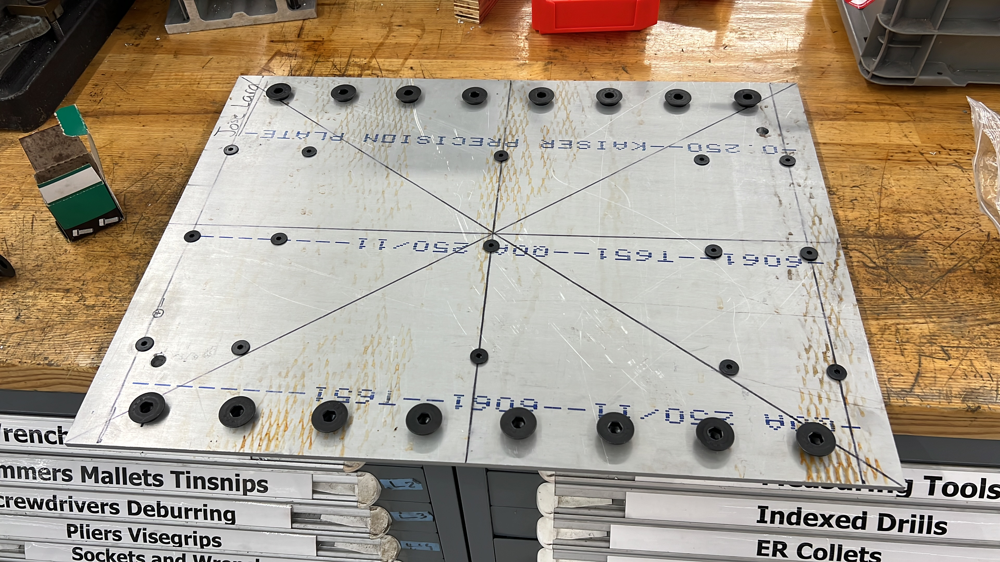
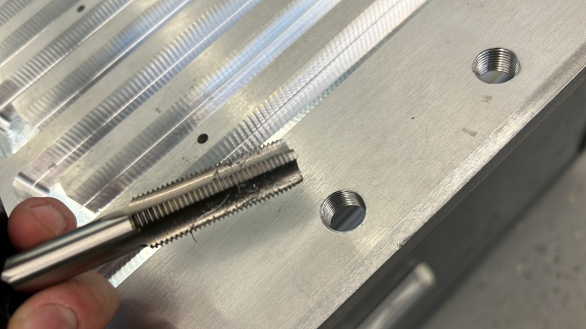
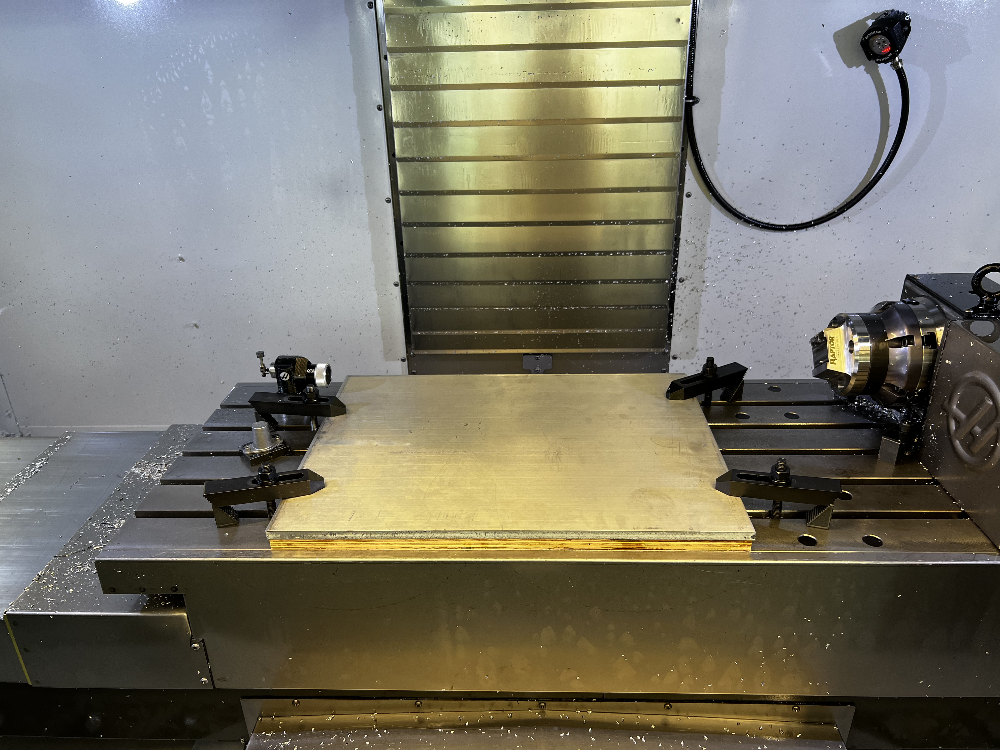
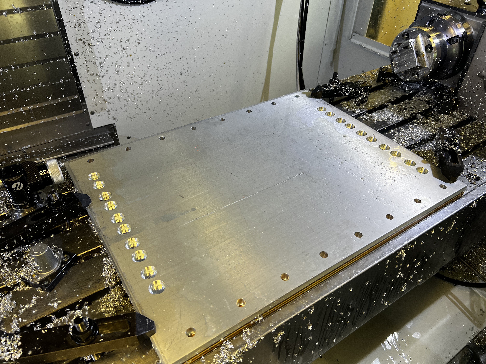
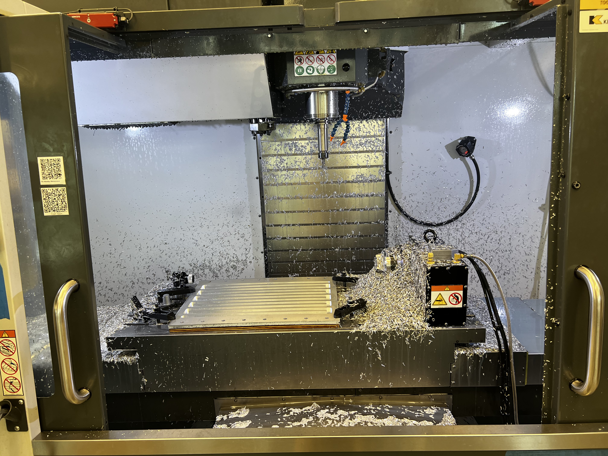
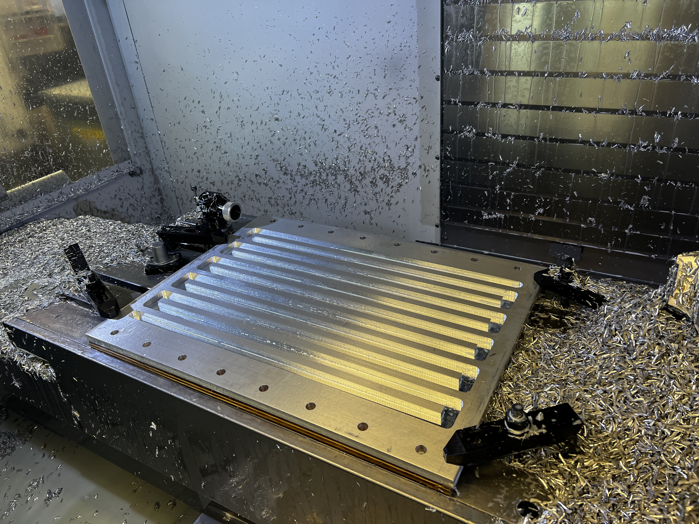

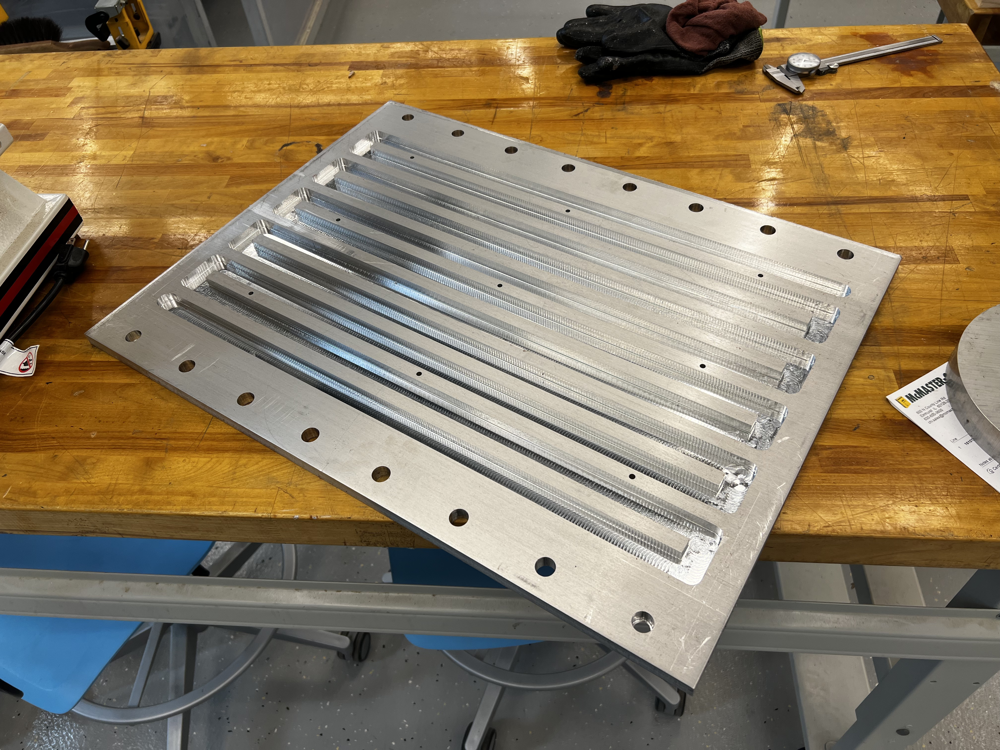
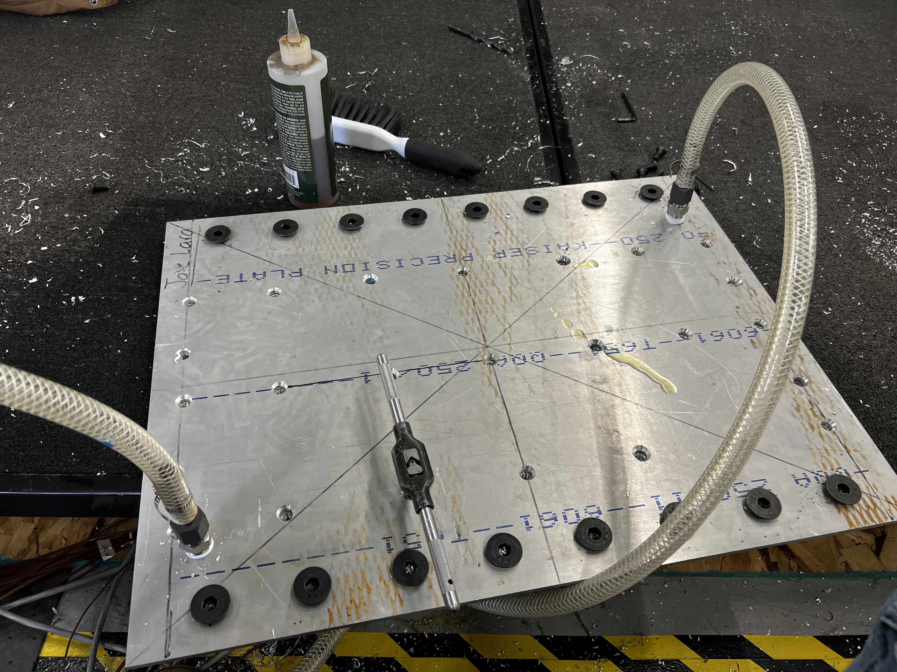

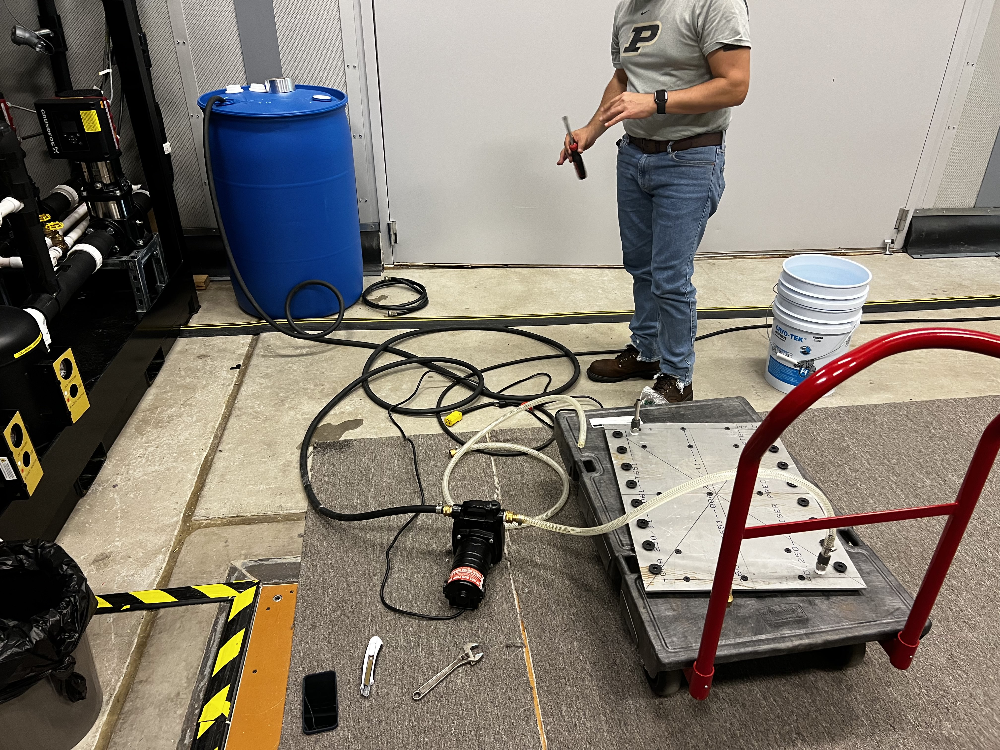
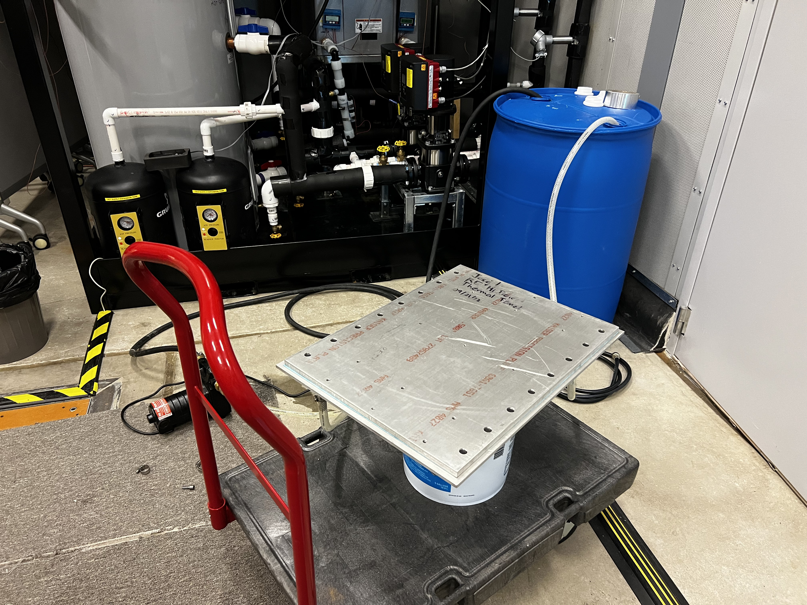
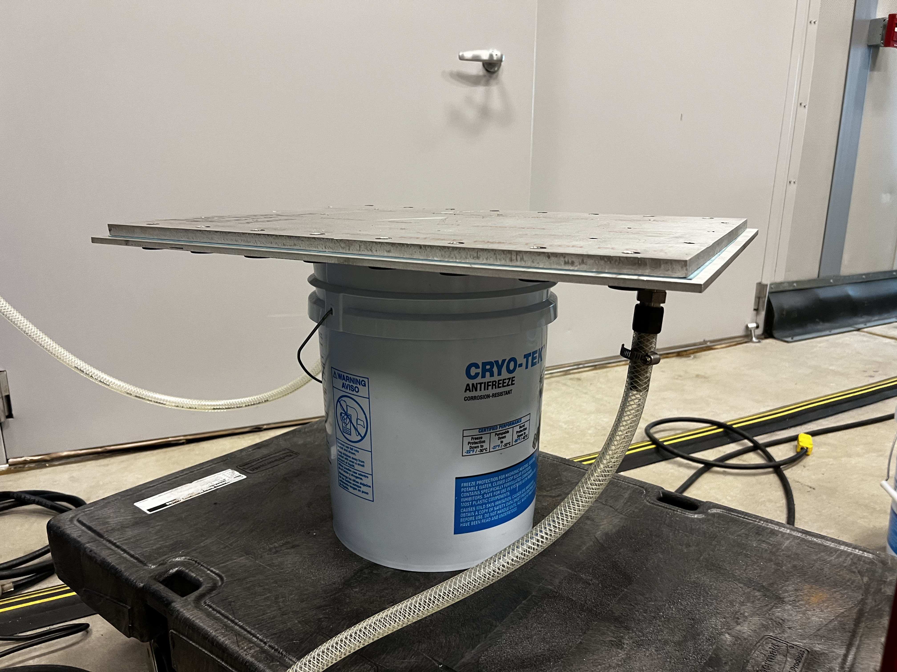
Overview
Simulating space hazards in real time. I developed a thermal actuator panel for NASA’s Resilient Extra-Terrestrial Habitats (RETH) Institute to model how habitats respond to thermal shocks like meteorite impacts and moonquakes. The system integrates hardware-in-the-loop simulations, controlling heat transfer to mimic extreme space conditions.
Technical Details
- Purpose: Simulate hazards through real-time thermal response
- Manufacturing: CNC-machined aluminum panel with cooling channels
- Sealing: Laser-cut Aramid Fiber gaskets
- Working Fluid: Water
- Heat Source: Immersion heater
- Control System: Custom-built PID
- Simulation & Modeling: CFD-based thermal analysis
- Integration: Mounted onto habitat wall, plumbed into system
Development Process
- Hazard Simulation: Designed panel to recreate thermal effects of meteorites, moonquakes, and space events.
- Manufacturing: CNC-machined aluminum with internal cooling channels for controlled heat dissipation.
- Sealing & Fluid Flow: Used laser-cut PTFE gaskets to prevent leaks in the water-based system.
- Heating System: Integrated immersion heater with a custom PID controller for precise temperature regulation.
- Validation: Simulated heat transfer using CFD to match real-world thermal responses.
Results
- Realistic Testing - Provided a hardware-in-the-loop system for real-time space hazard simulations.
- Precision Control - Custom PID ensured accurate temperature response.
- Scalable Design - Adaptable for different space mission environments.